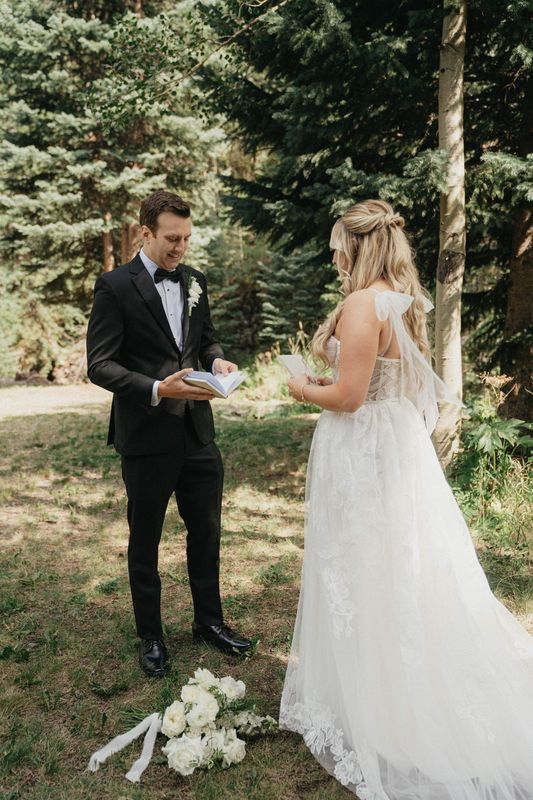
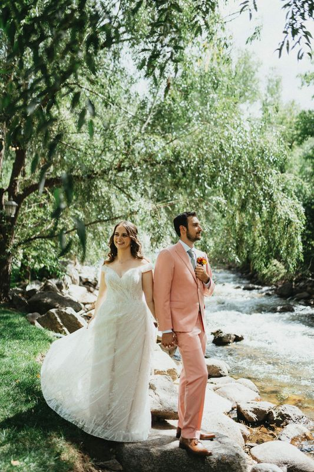
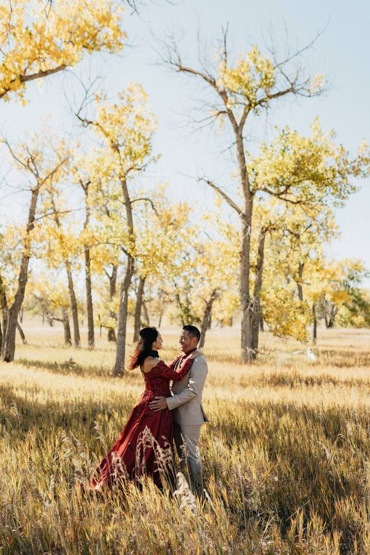
Weddings · Denver, Colorado & beyond
Denver Wedding Photographer
Hi, I’m Nic — a Colorado-based wedding photographer who loves big celebrations, quiet elopements and everything in between.
I keep things easy-going and fun, so you can relax and just be yourselves. While you’re laughing, I’m hunting for the unexpected angle or the slightly-wild idea that makes your photos look like you — and nobody else.
My calendar is full for the rest of 2026, but I’d love to hear about your date.
Inquire about your weddingHow I photograph weddings
Relaxed, personal, and ready for anything
Time to slow down
Your day moves fast. I look after the little details that keep things running smoothly and build in a few key moments for you to pause and enjoy it.
Quiet during the ceremony
Many ceremonies ask for no flash and a low profile. I stay unobtrusive and work with the light you have, so the moment stays yours.
Extra coverage when you want it
I can bring a second photographer to capture more of the day — more angles, more reactions, more moments you didn’t even know you missed.
Photos that feel like you
Candid laughter, quiet in-between moments and portraits you’ll actually want on your wall — all with an eye for the details.
Where I photograph
Weddings across Denver, the mountains & beyond
I’m based in Denver and photograph weddings along the Front Range, in Colorado’s mountain towns, and wherever your story takes us — I’m happy to travel. One weekend it’s a wedding high in the Rockies; the next it’s a celebration in the middle of the city.
Dreaming of aspens, alpine lakes or a quiet ceremony for just the two of you? See my page on Colorado mountain weddings & elopements.
Recent work
Wedding photography portfolio
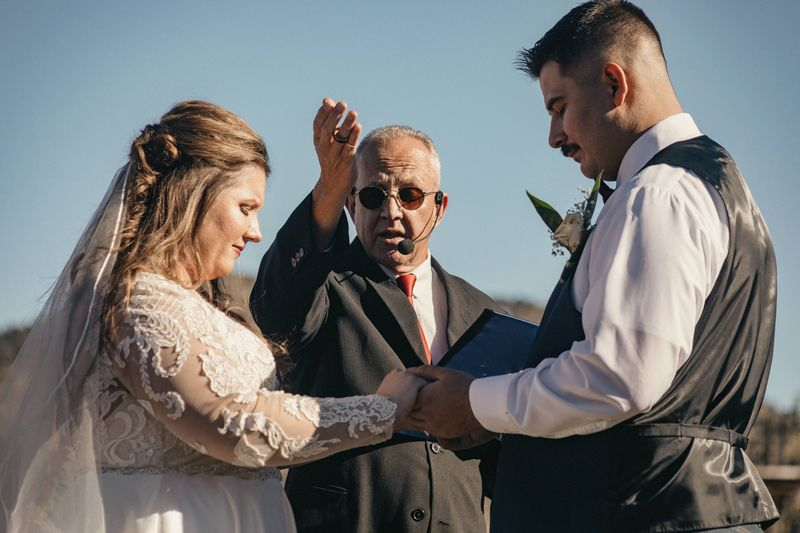
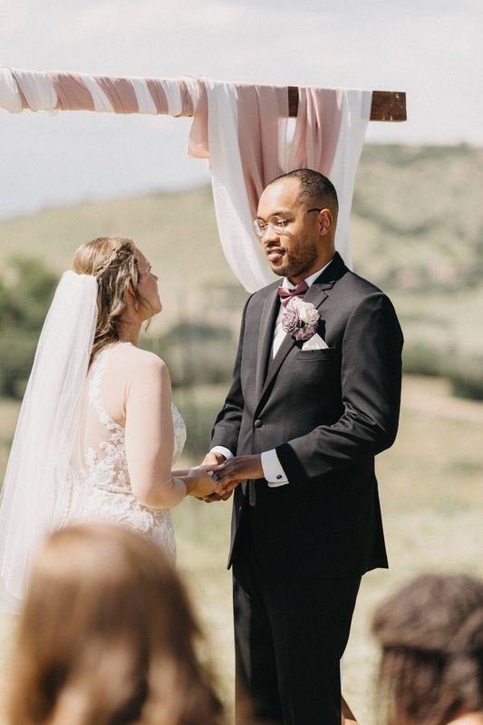
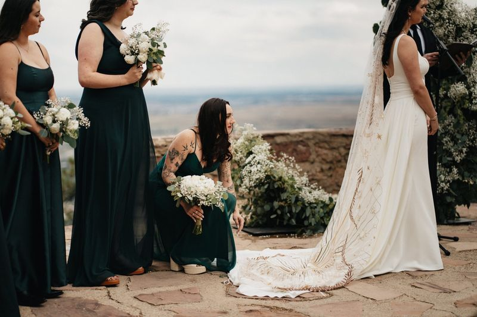
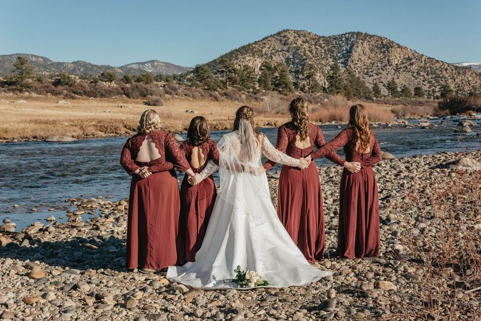
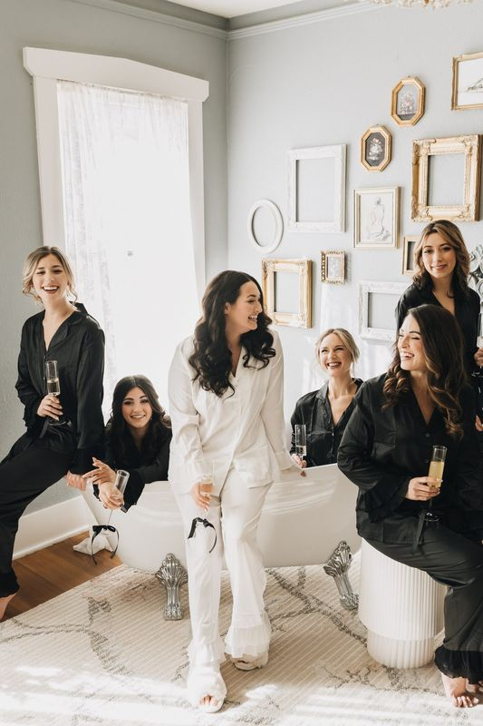
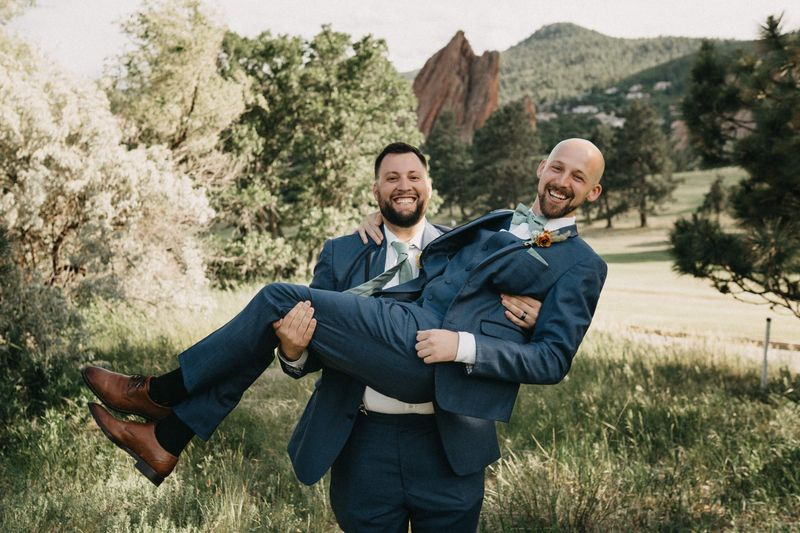
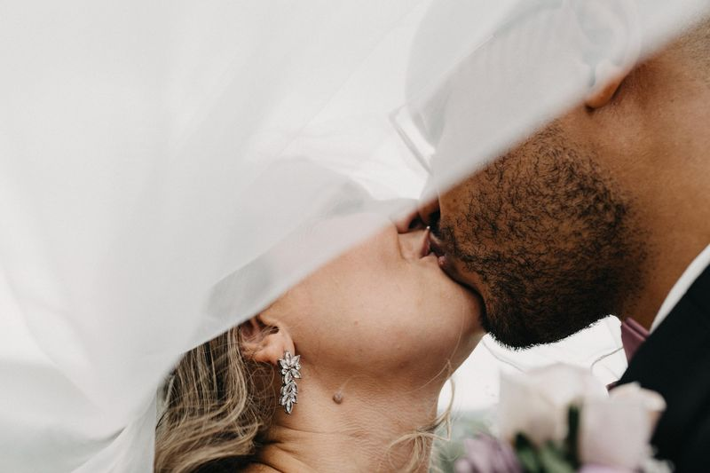
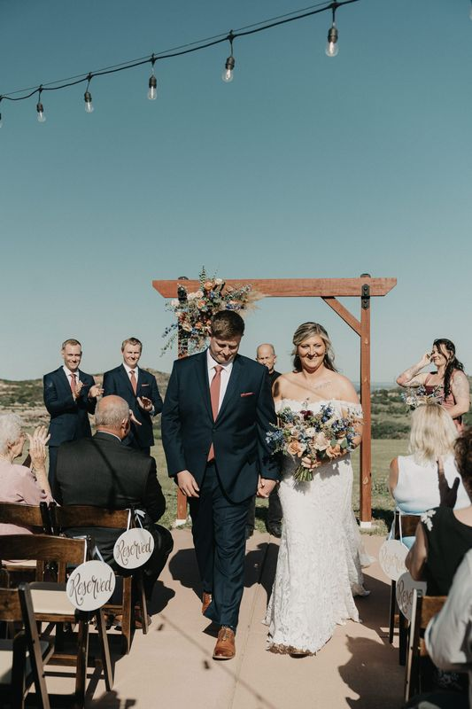
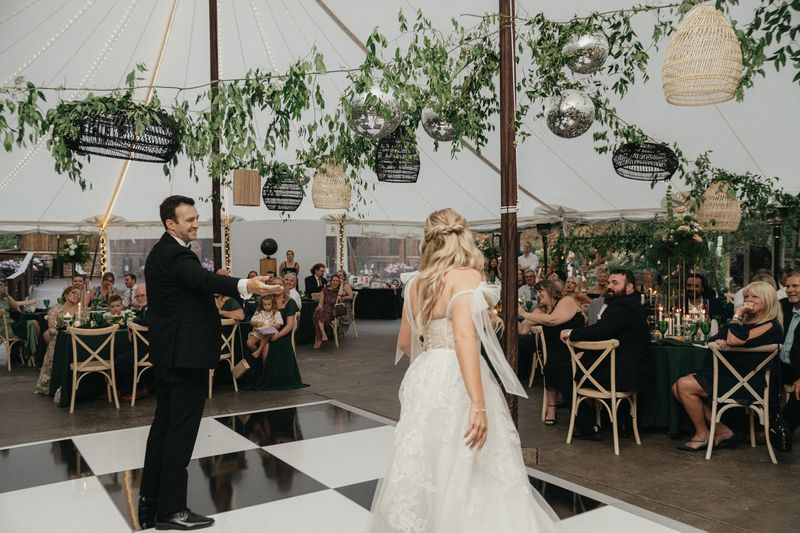
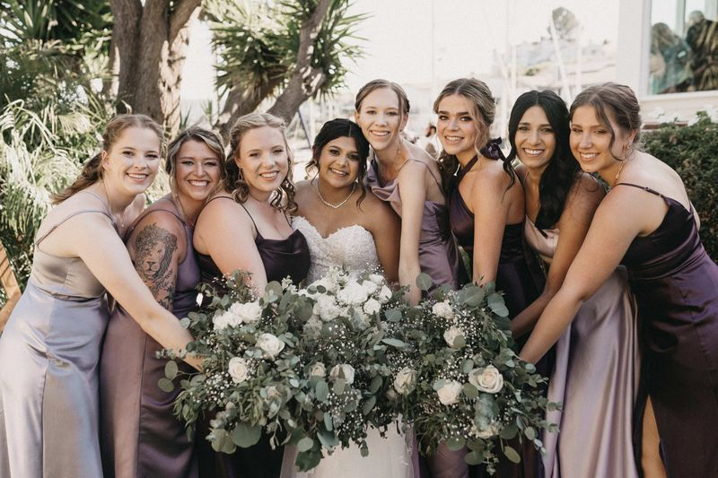
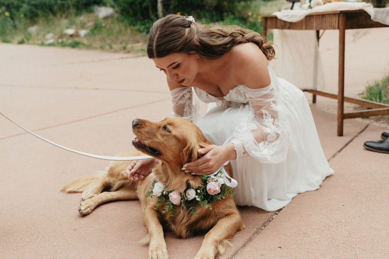
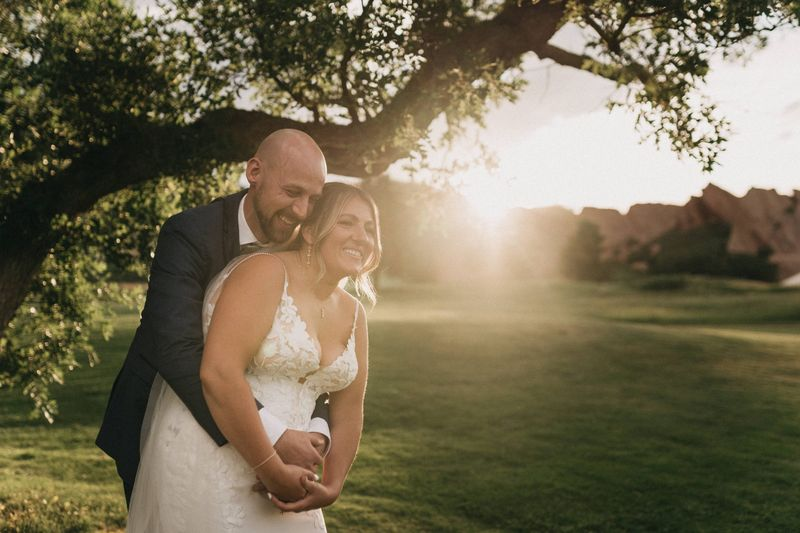
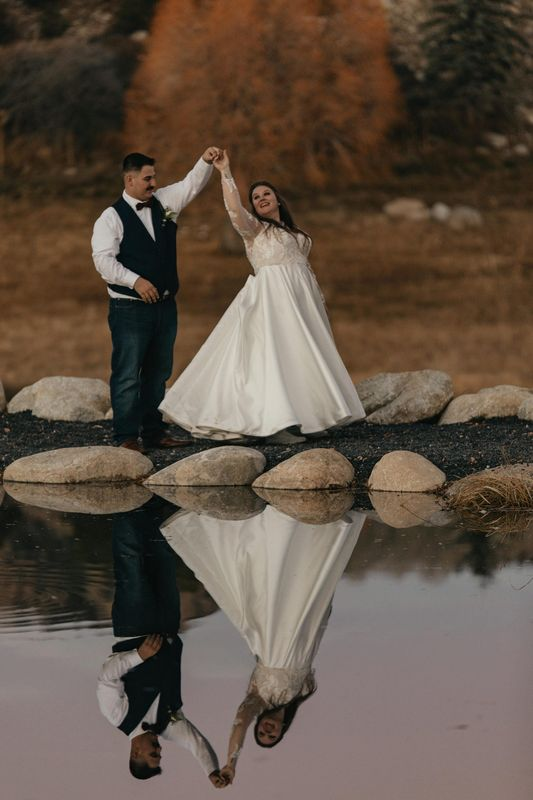
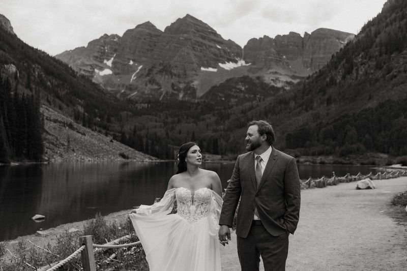
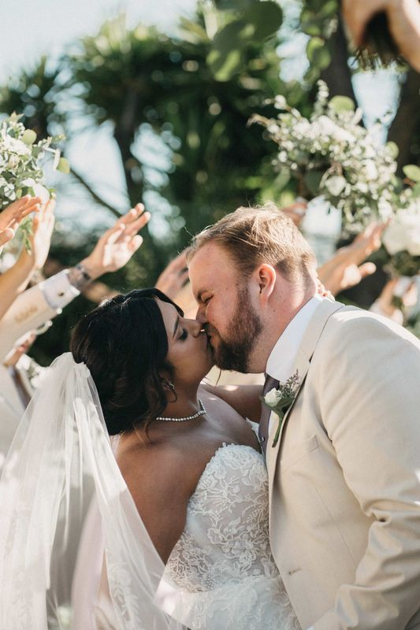
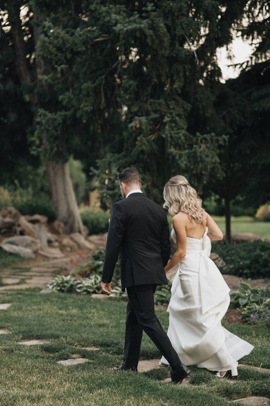
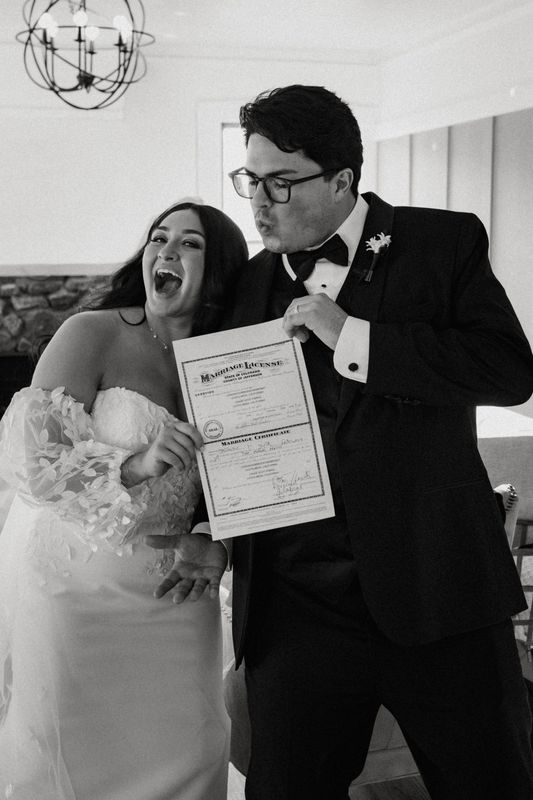
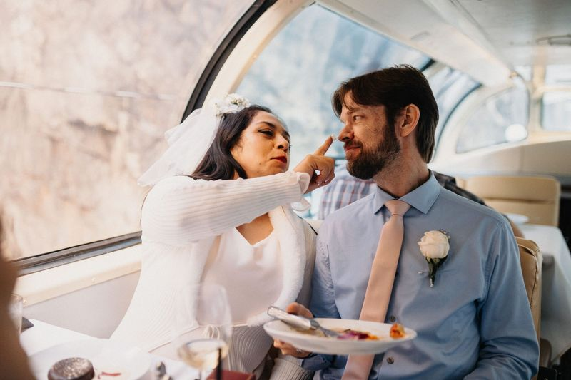
Kind words
From the couples I’ve photographed
★★★★★“Of all the vendors we had Nic Neumann Photography was by far the most outstanding we had. We appreciate all of the little details that he does just to make the day go as smoothly as possible and adding in key moments to slow down and enjoy the day. Beautiful photos and amazing professionalism.”
★★★★★“Nic did an absolutely amazing job on our wedding photos. His excitement was unmatched! He took so many amazing photos I am literally favoriting all of them!! Stunning captures of our day, down to the smallest of details. I am in love with these photos to provide us with incredible memories to last a lifetime!”
★★★★★“A TRUE PROFESSIONAL! Nic's experience in the field and behind the camera made him indispensable to our wedding day. Not only is he kind, fun, and calming, he knows exactly what is needed for the perfect shot and the most effective way to get it. Having Nic as our photographer was one of the best decisions we made!”
★★★★★“Nic captured my elopement this summer and it was the best decision. Our photos turned out so beautiful, Nic made it so easy the day of, and went above and beyond. This is the type of human you want to hire, for who he is, and for how seriously he takes capturing your most precious memories.”
Good to know
Wedding photography questions
Are you booking weddings for 2027 and 2028?
Yes! My calendar is full for the rest of 2026, but I’m happily booking 2027 and 2028 weddings. The quickest way to check your date is to send an inquiry and I’ll let you know if I’m available.
Do you travel for weddings?
Absolutely. I’m based in Denver and happy to travel — from the Front Range to Colorado’s mountain towns and beyond. Wherever your story takes us, I’ll be there.
Do you bring a second photographer?
For many weddings I can bring a second photographer for extra coverage and more angles on the day. Mention it in your inquiry and we’ll talk through what fits your timeline. More answers are on the full wedding photography FAQ.
Now booking 2027 & 2028
Let’s talk about your wedding
Tell me a little about you, your date and where you’re celebrating. I can’t wait to hear from you.
Start the conversationPrefer email? hello@nicneumannphoto.com